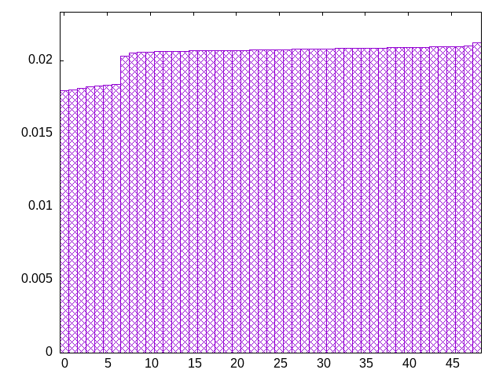
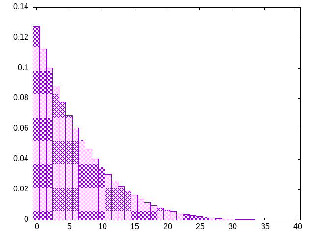
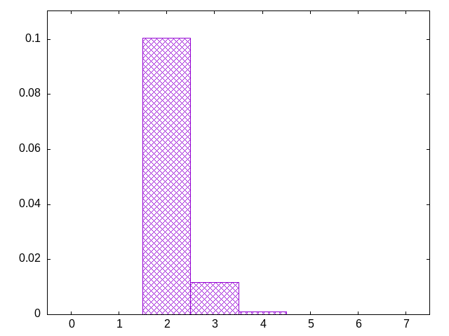

based on this reddit post
look at a big section of history, decreasing the chance for a piece each time it occurs (multiplicative)
zjjosojjiislsozllitiltizzzotttotilijstljooslojzjsiszlzszijlzisioolotitstzttjotssolzjjjlzszilltjtlltizslizililiojtsoiozosijoottzsjtjjlzsllzsltitzjsloszilijojssoszitsottzjolzilisjsolizsolljitzijosjjtjtsztztioltjolzzjjlsitttolisiiizsooljtssozjzostillojzlslsljjlzttjititszlotjtisjozszoososiiitsljjlozljilzozistztztjtljjizztijsososoislsilizzstltzotjzsjoitlozjtjjtootliisoiisslzlzilolltszsjjtsolzzsjtjjttzotlioiisoijzizszottoillljsozsjlstljsjsizzzliotiiziotoijjozlstttoiszjlllostzzsjiszttisotiljjijjotizoziilsolozlsitjotzsjtlstzijzsjjzotolsjoizlitlizlisojzitjoliolslttjljjslsssojozztzoztszijitstijoislzilllolsttijotsljszoitsszzszzloiolzjltzjzizslooiilttsijtjojojsttjzlioztslsslilotjzlzlizttiisioiojolzljotsjozjioislzojsozjszililttsltjtstijsoiottjooiiolzjijzjllsstzlszsljlzoilzztistiolijtoottjisisjzszjjolllisssoojzootzoltitislsjstjsojilztiozzisjlotijlzszooolitijszlszjstiossloltztoiiljjltjjsjzlztooitlssiiojjjizoistzositssolozjzjlstljtiiloiitzsjizjzilzoisjstiolstszljlozjlsloljtjilijttottlizjiszsjsozolojoz
bagginess: 0.0091
bagginess6: 0.1748
distribution1_maxgap: 6.599999999998274e-05
distribution2_maxgap: 0.002165002165002164
distribution3_maxgap: 0.000482000964001928
distribution4_maxgap: 4.0000120000360014e-05
diversity: 4.8
entropy: 11.600
evenness_diff: 5.816
evenness_same: 4.742
maxdrought: 39.3
maxflood: 6
peakdrought: 0.0
repchance: 0.1277
seq4_coverage: 1.0000
seq4_follow: 6.126
distribution2_graph:

drought_graph:

flood_graph:

similarity: (lower is more similar)
| 0.010 | bag4 |
| 0.010 | shift21 |
| 0.015 | shift14 |
| 0.017 | balanced9 |
| 0.019 | deepbag_window10 |
| 0.021 | wet3 |
| 0.024 | bag3 |
| 0.028 | shift10_5 |
| 0.038 | balanced_long_add_pure |
| 0.049 | deepbag_window7 |
| 0.056 | seamless_bag3_pure |
| 0.077 | deepbag_fixed10 |
| 0.091 | nes_pure |
| 0.091 | fullrandom_pure |
| 0.102 | fullrandom |
| 0.103 | wet2_size100 |
| 0.121 | seamless_bag2_pure |
| 0.130 | shift7 |
| 0.131 | nes |
| 0.140 | bag2 |
| 0.272 | shirts2 |
| 0.305 | balanced7 |
| 0.313 | weight_lin_pure |
| 0.341 | wet2 |
| 0.345 | weight2 |
| 0.371 | balanced5 |
| 0.373 | deepbag_fixed7 |
| 0.374 | deepbag_window4 |
| 0.480 | shirts_smooth2 |
| 0.485 | seamless_deep_pure |
| 0.507 | weight |
| 0.514 | wet3_size12 |
| 0.723 | tgm |
| 0.731 | tgm_pure |
| 0.799 | bag |
| 0.800 | bag_pure |
| 0.840 | shift3_5 |
| 0.843 | deepbag_fixed4 |
| 0.912 | wet_pure |
| 0.986 | tgm_tap_pure |
| 0.987 | tgm_tap |
| 1.054 | wet |
| 1.087 | weight_exp |
| 1.113 | ti |
| 1.194 | weight_exp_pure |
| 1.401 | seamless_bag_pure |
| 1.847 | shirts |
| 1.882 | repeat_recent_pure |
| 2.061 | shirts_smooth |
| 3.241 | shift1_75 |
| 4.103 | repeat_last_pure |
| 9.560 | flatbag |
| 9.560 | flatbag_pure |